Yes, you too can learn to pick out tunes on America's favorite old-time folk instrument!
So you always wanted to play the banjo, eh? You picked up a nice one at a yard sale or got one for Christmas, and now you're wondering what to do with the darn thing. All the banjo books you've seen make you feel like an idiot, and you're about ready to trade your instrument for a garden tiller or maybe a food processor. But wait! This article was written just for you. It'll show you, in the most simplified terms possible, how to make music (and friends) with that cantankerous banjo of yours. Trust me.
Wayne Erbsen is Director of the Appalachian Music Program at Warren Wilson College in Swannanoa, North Carolina. Warren Wilson is the only college in the country that offers a degree in Appalachian music.
HOLDING THE DANG THING
As you've probably found out by now, the banjo is a rather slippery instrument. If you don't control it firmly, it tends to wiggle off your lap and fall onto the floor. Well, try this: Set the banjo edgewise on your lap, with the neck (the long "handle") pointing slightly upward to the left. The round body should be nestled comfortably between your two legs, and your right forearm should be pushing down firmly on the banjo's rim. (Some, but not all, models are equipped with an armrest at the point where your arm contacts the rim.) You should be able to make the banjo stay put, using only the pressure from your two legs and right arm. It's important to avoid using your left hand to hold up the neck. That hand must be free to move up and down the neck without having to keep your banjo from crashing to the floor. Propping your left foot up on a small stack of books, or on your banjo case, might help you to hold the instrument steadier.
A strap can also be useful; you can buy one, or make one out of cloth, leather, or even an old necktie. Tie one end on one of the brackets just under the banjo's neck, and the other to one of the brackets underneath the tailpiece (where the strings are secured). Fine! Your strap will make holding the banjo easier, especially when you're standing up.
TUNING
Most people assume they have a tin ear when it comes to tuning an instrument. Don't fall into the trap of thinking you'll never play merely because you can't seem to get your banjo in tune. Just as practice will help your playing, it will also help your tuning.
If you take a look at your banjo sitting there on your lap, you'll probably notice that it's equipped with five strings. If it has only four strings, either a string is missing or you are the proud owner of a tenor or plectrum banjo. If you do have a tenor or plectrum, you might want to trade it in on a five-stringer, which is the kind used to play bluegrass and old-time country music.
For the sake of convenience, the five strings of the banjo are referred to by number, starting with the first string, which is the one closest to your knees. The fifth string is the short one, the one that looks like it was an afterthought . . . which it was. The banjo was originally an African four-stringed instrument, and the fifth string was added by American players sometime in the 1840's.
The banjo's strings also have letter names, all of which correspond to the notes you'll want to tune them to: first string, D . . . second string, B . . . third string, G . . . fourth string, D, and fifth string, G. (The first string's D note and the fifth string's G should be an octave higher than those of the fourth and third strings, respectively.) This gives you G tuning, the one most commonly used.
There are five good ways to tune your instrument.
[1] Tune to a pitch pipe. Many music stores sell banjo pitch pipes. Just make sure before you walk out of the store that the pipe has the notes you'll need: G, B, and D.
[2] Tune to a piano. You can't stick a piano in your pocket the way you can a pitch pipe, but if you have one around, it can be handy to tune to. Just ask the owner where the D's, G's, and B's are, and make your banjo strings sound like the notes on the keyboard.
[3] Tune to a guitar. If you can find a tuned guitar, it'll be a miracle; but if you do, you can tune your banjo to it. Just remember that the second, third, and fourth strings on the banjo should be tuned to sound exactly the same as the second, third, and fourth strings on the guitar. The fifth string of the banjo can be tuned to the first string of the guitar played at the third fret, and, finally, the banjo's first string should sound like the guitar's second string played at the third fret.
[4] Tune the banjo to itself. This is the most common method, because it doesn't require pitch pipes, guitars or cumbersome pianos. Each string is simply tuned relative to all the others. Begin by turning the first (D) string so that it's moderately tight (but not too tight, or you'll be off to the store for a new string). Now tune the second (B) string to the first string. This is accomplished by fretting the second string at the third fret (push your finger down just behind, rather than on, the metal strip itself, so that the string is pressed against the third space on the neck). Push down hard to get a good, clear note when you pluck the string with your right hand. Now tighten or loosen the second string until it produces the same pitch at the third fret as the first string does when played open (or unfretted).
To tune the third string to the second string, fret the third string at the fourth fret, and make it sound like the second string played open. Next, fret the fourth string at the fifth fret, and tune it to the third string played open. Finally, adjust the fifth string until it matches the first string fretted at the fifth fret. Whew! You've done it! (Well, almost, anyway . . . after you've gone through this process once, you'll probably have to go back and fine-tune a few strings here and there to make them all sound just right.)
[5] Get help. The banjo can be persnickety and seems to need more careful tuning than many other stringed instruments. It should be no blow to your banjo ego to seek expert help. Simply tote the rascal into your neighborhood music store and ask for assistance (if you have to do this repeatedly, you might want to spread your visits among several places, just to avoid wearing out your welcome at any one store). Or ask any musician who plays a stringed instrument to help you get in tune.
Tuning tips. Here are some well-guarded secrets for tuning your banjo: [1] If you're having trouble figuring out whether a string is higher or lower in pitch than other strings, try singing or humming the notes. If you can find the notes with your voice, you'll be better able to hear the different pitches. [2] When you're tuning a string, make sure to pluck the wire while you're turning the peg. That way, you'll hear how much the string is changing. [3] Old strings are sometimes hard to tune. Treat your banjo to a new set if the ones you have now are old or rusty.
BANJO ROLLS
A roll in banjo lingo is the basic unit of bluegrass banjo playing. It consists of a pattern of notes that are used to play the melody or harmony and rhythm of a song. Rolls are like bricks: You more or less lay them end to end to construct a break, or solo. But, unlike bricks, rolls come in various shapes and sizes. In that respect they're more like the pieces in a mosaic or jigsaw puzzle: You're always looking for one that fits what you're trying to create. You'll see what I'm talking about soon enough.
Bluegrass banjo is often called Scruggs style, after Earl Scruggs, who helped develop this kind of playing. Scruggs style is also called three finger pickin'. The thumb normally plays the second, third, fourth, or fifth strings; the index finger plays the second, third, or fourth strings; and the middle finger plays only the first string. The general rule is to alternate the fingers; bluegrass pickers seldom use the same finger twice in a row. While one finger works, the others rest.
Your first roll: Let's start with a super-simple roll that uses only the thumb and middle finger. Strike the second string with a downstroke of your thumb, then pluck up on the first string with your middle finger. The second string is your melody note and the first string is a fill-in note. Play it several times. Congratulations! You've just played your first roll.
Now use the third string as your melody string. Hit the third string with your thumb, and then immediately pluck the first string with your middle finger. Now play the fourth string as a melody string, once again followed by the first string. Practice moving your thumb from the second, third, and fourth strings. After each of these melody notes, quickly play the first string with your middle finger.
READING TABLATURE
Banjo pickers use tablature instead of standard musical notation to communicate songs among themselves. The system's really easy to read, once you get used to it.
Take a look at the illustration below: The five lines of the staff represent the strings of your banjo, with the first string at the top and the fifth string at the bottom. The circles represent open, or unfretted, strings, and the letters tell you which fingers of the right hand to use (T for thumb, M for middle, 1 for index, etc.).
Tablature is read from left to right, just like a book. The tab in the illustration instructs you to play the strings in the following order: 2, 1, 3, 1, 4, 1, 3, 1. Give it a try. There! You've got it. Now let your right hand rest for a minute. It's time to concentrate on learning to use your left hand.
FRETTING THE STRINGS
As you've already discovered, the act of fingering the banjo with your left hand is called fretting. Here are some tips to help you perfect your technique. [1] Keep your fingernails moderately short so they won't get in your way. [2] Bring your fingers straight down on the strings; don't let them lean over and touch adjacent strings. (No, your fingers are not too fat; you just need practice.) [3] Wrist position is the key to good, clean fretting. To get a better understanding of what proper wrist position is, hold your left hand, palm up, out in front of you, as though you're testing to see if it's raining. Now pretend you have a watchband on your left wrist, and try to touch that imaginary band by curling the fingers of your left hand toward you. Can't reach it? No, but you've bent your wrist much as you're supposed to when fretting your banjo.
Now pick up the instrument again, making sure to place your left thumb against the middle of the back of the neck and to bend your wrist just as you did during the watchband caper. This time, when you go to fret the strings, your fingers will come straight down on them. [4] It's helpful to think of squeezing the string between your fingers and your thumb when you're fretting. Pushing with your thumb will give you the leverage you need to produce clear notes.
What's that? Your fingers are getting sore? Let 'em rest for a minute. Even though banjo strings are easier to push down than guitar or mandolin strings, your digits will surely get a little tender until practice produces calluses. Don't get discouraged! Your fingertips will toughen up in no time.
YOUR FIRST SONG
All right, it's time to play your first song-" Shortenin' Bread." The melody is played on the second and third strings only. Remember: After each melody note (which is played with the thumb), pluck up on the first string open with your middle finger.
Ready? Here's the melody: third string open, second string at the fifth fret, second string at the third fret, second string at the fifth fret. Once you've played that, repeat the same thing twice and then add this ending: second string open, third string at the second fret, and third string open. Right after that, pluck or pinch the first and fifth strings at the same time to sound the final note. Don't forget to follow each melody note with the first string played open with the middle finger.
The illustration above shows you what "Shortenin' Bread" looks like in tablature (keep in mind that the numbers on the lines represent the frets to play). After you've practiced awhile and can play this song a little faster than you did on your first few tries, you'll see that the melody goes perfectly with the words.
Play "Shortenin' Bread" until your hand falls off (well, almost). While you're resting and patting yourself on the back for your great banjo playing, try cooking up a pan of real shortening bread. Then you'll be able to play the song with feeling!
BANJO CHORDS
One of the best-kept secrets in country music and bluegrass is that you need to learn only three chords to play most songs. Amazing! Moreover, banjo players have an edge over guitarists because the banjo is usually tuned in G, which means that a G chord is produced by playing all the strings open, together. No fretting! What could be easier?
The other two chords you'll need while playing in G tuning are C and D7.
C Chord: The C chord is played by fretting the second string at the first fret with your left index finger and the first string at the second fret with your ring finger. Here's a picture of it:
Occasionally you may want to play a fuller C chord by adding a note: Fret the fourth string at the second fret with your middle finger. For most songs, though, the simple C chord we tried above will suffice.
D7 Chord: This chord is produced by leaving your index finger where it was for the C chord: on the second string at the first fret. Now lift up your other finger or fingers, and push your middle finger down on the third string at the second fret. That's your D7 chord. It looks like this:
Chording tips. Now you know your G, C, and D7 chords; using them, you can play an almost endless number of favorite songs. The catch, though, is that you have to learn to play your chords quickly. A song won't wait around for you to change to the next chord, and neither will your picking buddies. So here are some hints to help you develop speed.
[1] On D7 and C, which normally involve fretting just two strings, practice pushing both your fingers down at the same time. Lift them up at the same time, too. [2] Since using your left hand to prop up the neck of the banjo will slow your chord changes, make sure you're holding your instrument properly. [3] Practice, practice, practice! Drill yourself repeatedly to see how fast you can change from G to C to D7 and back to C.
A NEW ROLL
With your G, C, and D7 ready for action, we can try a new roll to go with them. First, though, you'll need to practice just your righthand technique; play all the strings open, or unfretted, for now.
Here's the roll: Play the second string with your thumb, the first string with your middle finger, the fifth string with your thumb, and, finally, the first string with your middle finger. In tablature, it looks like this:
Play the roll over and over: 2, 1, 5, 1. The first of these four notes is your melody note; the other three are all fill-ins. You can also play the melody on the third or fourth strings. Just remember to play your fill-in notes (1, 5, 1) after each melody note. So, a third-string melody would be 3, 1, 5, 1, and a fourth-string melody would be 4, 1, 5, 1. Practice alternating your thumb between the second, third, and fourth strings while keeping a continuous flow of fill-in notes.
This four-note pattern-played by alternating thumb, middle finger, thumb, middle finger-is a good, versatile, rhythmic banjo roll. All the notes have the same time value, so they keep a constant beat going. Think of a clock ticking. Your four notes would sound like "tick-a, tock-a." Here they are in tablature:
You might find that tapping your foot will also help you keep a steady beat. Bring your foot down every time your thumb strikes a string. Once you get going, you'll sound as though you have an accompanist!
ADDING CHORD CHANGES
Let's take your new roll and your G, C, and D7 chords, and learn to play them together. Your ultimate objective is to get so that you can keep your roll going while changing chords.
First, practice playing the roll by alternating your thumb between several strings and continuing to add fill-in notes after each melody note. For example, while on G (which, of course, you play unfretted), strike the third and fourth strings alternately. In tablature, it looks like this:
While playing a C chord, alternate your thumb between the second and third strings, like above.
For D7, alternate between the third and second strings, like this:
Now, practice alternating your thumb while changing from G to C, from C to D7, and back to G. Practice!
PLAYING SONGS
Once you can keep your roll going while alternating your thumb and changing chords, you'll be ready to play most any bluegrass or old-time country song. Here's a standard that everyone knows.
The chords are marked above the words where you change chords. To make it sound right, you'll need to sing the song while playing.
WHERE TO GO FROM HERE
From now on when you listen to a record or a tune on the radio, pay attention to where the chord changes occur. And if you're lucky enough to get to hear live music, sit where you can see the musicians play. Get to know what a G, C, and D look like on a guitar, so that you can watch the guitarist and pick out the changes.
There are lots of good books available that are excellent sources of old-time songs and that show you the various chords involved. Don't overlook the many helpful how-to volumes on playing the banjo, either; although this article will give you a good start on mastering your instrument, you'll probably want to learn other chords, rolls, and such.
The best advice I can give you, though, is to surround yourself with banjo music, and especially live music. There are bluegrass musicians (and banjo pickers) in every state of the union and in most countries of the world. Get to know the pickers in your area; learn to talk their language, and listen to the records they suggest. Before long, it'll be you who's being sought out by eager beginners.
Good luck, and keep pickin'!
EDITOR'S NOTE: Mr. Erbsen is also the author of a number of books on playing various instruments and music: Clawhammer Banjo for the Complete Ignoramus! ($6.95), Starting Bluegrass Banjo From Scratch ($5.95), The Complete & Painless Guide to the Guitar ($6.95), The Backpocket Bluegrass Songbook ($3.95), and The Backpocket Old-Time Songbook ($3.95). All are available for the cover price, plus $1.00 postage per order, from Wayne Erbsen, 825 Bee Tree Rd., Swannanoa, NC 28778.
You may also be interested in any of several instructive book-and-record sets on playing the banjo that are offered by Kicking Mule Records, P. 0. Box 158, Alderpoint, CA 95401. Write for a free catalog.
|
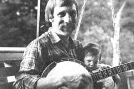 |
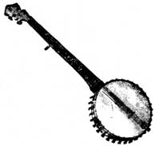 |
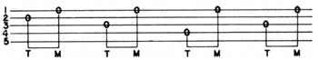 |
|
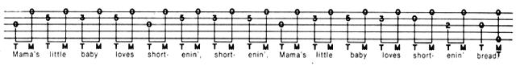 |
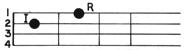 |
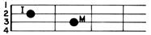 |
|
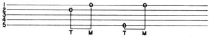 |
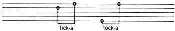 |
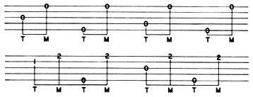 |
|
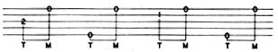 |
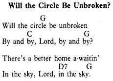 |
|